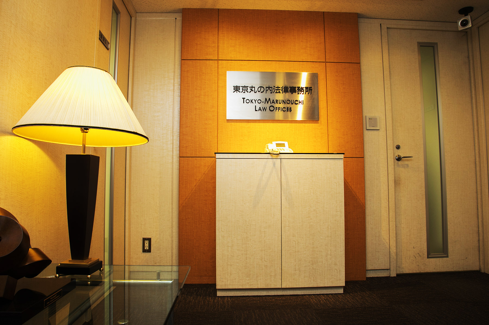

代表挨拶

もぎたてのトマトを食べたくなって、ちょっと郊外にあるトマト農家さんの直売所まで行ってきました。ここのトマトは新鮮で、美味しくて、お安いという、とってもお買い得なトマトなんです。
自己紹介
東京大学法学部卒業
名古屋大学修士課程国際人権法専攻
２００３年弁護士登録（愛知県弁護士会）
２００４年から２００８年まで愛知大学法科大学院非常勤講師
２００８年から２０１３年アメリカ留学（ニューヨーク大学ロースクール、アメリカン大学ロースクール）
ニューヨーク州司法試験に合格
ニューヨーク州弁護士
対応言語：英語、日本語
※中国語のできるスタッフもいますので、中国関連のご相談も承っております。
２０１５年より福岡国際法律事務所所属
同年より福岡県弁護士会所属
２０１７年独立日弁連国際人権問題委員会 副委員長
ビジネスと人権PT座長
医療問題研究会福岡弁護団所属
その他の活動
何より、弁護士会の委員会活動。日弁連の国際人権問題委員会、教育法制改正問題対策ワーキンググループ、自由権規約ワーキンググループ。 福岡県弁護士会の委員会として、国際委員会、子どもの権利委員会、高齢者・障害者委員会、刑事弁護委員会など 弁護団として、原発避難者訴訟、生活保護引下処分取消訴訟、子宮頸がんワクチン訴訟